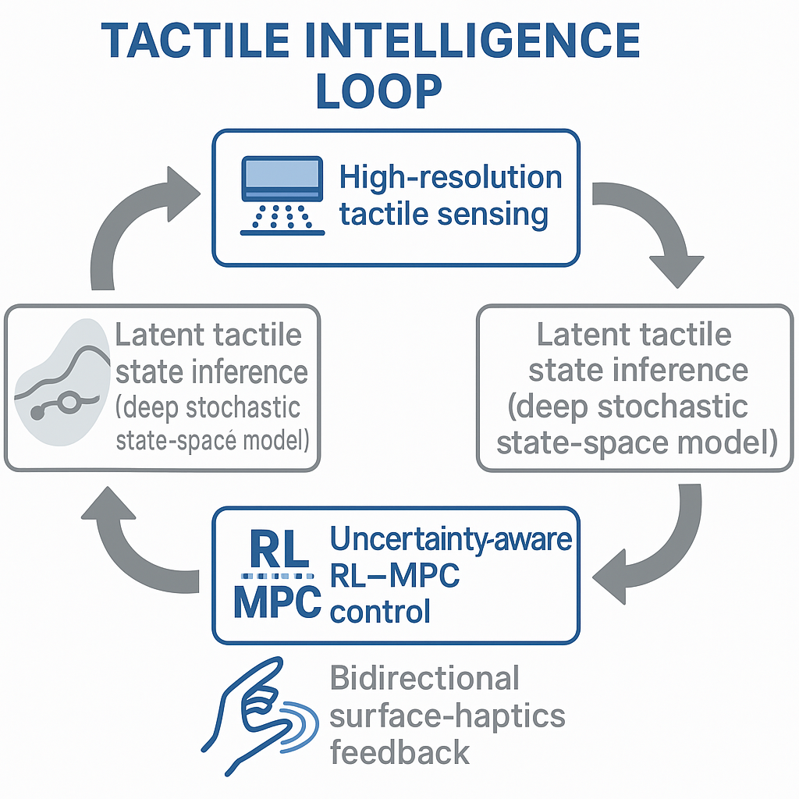

Despite remarkable advances in perception and planning, modern robots still struggle with contact-rich interactions. Friction, slip, and occlusion introduce uncertainty at the very interface between robot and world. The Tactile Intelligence Loop envisions a unified architecture where sensing, inference, and control form a continuous cycle — allowing robots to learn and reason through the act of touch itself.

I am driven by the vision of robots that can feel, adapt, and decide through tactile experience. My long-term goal is to bridge tactile sensing with policy learning and model-based control, enabling robots to interact with their environments as fluidly and intuitively as humans do.
Building upon my research in robust, adaptive, and Bayesian model predictive control—augmented by reinforcement learning— I aim to transform compliance from a passive mechanical property into an active principle of intelligence. This idea evolves into a closed tactile intelligence loop: coupling tactile perception, stochastic state inference, and uncertainty-aware control to achieve dexterous, human-compatible manipulation.
This pursuit embodies my broader philosophy of compliant intelligence—that robots should not resist uncertainty, but rather yield, interpret, and learn from it. By merging the physics of touch with the mathematics of control and learning, we move closer to robots that are safe, adaptable, and profoundly aware.
To develop robots that yield to uncertainty yet remain stable, safe, and dexterous — advancing tactile robotics toward truly human-compatible interaction.
“To touch is to understand — robots that learn as they feel.”
Challenge. Change. Impact. — through tactile intelligence.